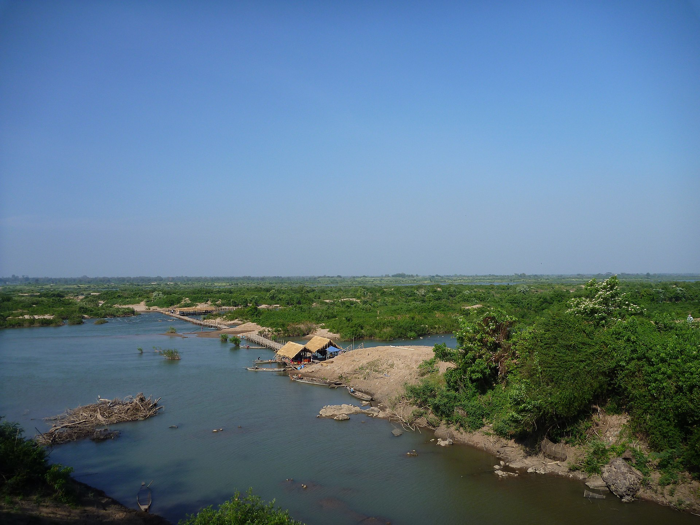

Kratié (Khmer: ក្រចេះ, Krâchéh), alternatively spelled Kracheh, is a province of Cambodia located in the northeast. It borders Stung Treng to the north, Mondulkiri to the east, Kampong Thom and Kampong Cham to the west, and Tboung Khmum, and the country of Vietnam to the south. The province’s capital is the town of Kratié located within the Kratié Municipality.
